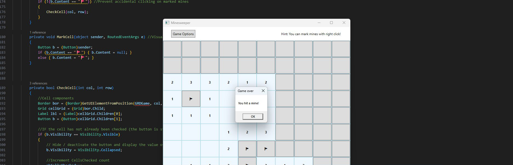

Projet Démineur en IHM

>Lien github vers le projet<
Dans le cadre du BUT Informatique, ce projet consistait à reproduire le jeu classique Démineur, popularisé par les anciennes versions de Windows.
Le joueur évolue sur une grille dont les cases sont initialement masquées et doit révéler toutes celles qui ne contiennent pas de bombes. Lorsqu’une case est révélée, elle indique le nombre de bombes présentes dans son voisinage immédiat. Si aucune bombe n’est adjacente, le jeu découvre automatiquement les cases voisines, permettant de révéler de larges zones en un seul clic. Le joueur peut également placer des drapeaux pour marquer les cases suspectées de contenir une bombe. La partie est perdue si une bombe est révélée.
Ce projet a permis de travailler la logique évènementielle, la gestion d’une grille de jeu, ainsi que du code récursif pour la création de la grille. Le joueur peut également paramétrer la taille de la grille et le nombre de bombes, ce qui ajoute une dimension de configuration et de gestion dynamique des données.